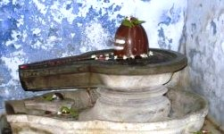

<?xml version="1.0" encoding="UTF-8"?><rss version="2.0"
	xmlns:content="http://purl.org/rss/1.0/modules/content/"
	xmlns:wfw="http://wellformedweb.org/CommentAPI/"
	xmlns:dc="http://purl.org/dc/elements/1.1/"
	xmlns:atom="http://www.w3.org/2005/Atom"
	xmlns:sy="http://purl.org/rss/1.0/modules/syndication/"
	xmlns:slash="http://purl.org/rss/1.0/modules/slash/"
	>

<channel>
	<title>Varuneshwar &#8211; Varanasi Temples</title>
	<atom:link href="index.html" rel="self" type="application/rss+xml" />
	<link>../../../../../index.html</link>
	<description>Temples of Varanasi as referred to in Kashi Khand</description>
	<lastBuildDate>Thu, 19 Jun 2025 05:16:46 +0000</lastBuildDate>
	<language>en-US</language>
	<sy:updatePeriod>hourly</sy:updatePeriod>
	<sy:updateFrequency>1</sy:updateFrequency>
	<generator>https://wordpress.org/?v=4.6.29</generator>
	<item>
		<title>VARUNESHWAR</title>
		<link>../../../../../shiva-temples/varuneshwar/index.html</link>
		<pubDate>Tue, 11 May 2010 07:01:02 +0000</pubDate>
		<dc:creator><![CDATA[admin]]></dc:creator>
				<category><![CDATA[Other Shiva Temples (S-Y)]]></category>
		<category><![CDATA[Shiva Temples]]></category>
		<category><![CDATA[Varuneshwar]]></category>
		<category><![CDATA[wish]]></category>

		<guid isPermaLink="false">../../../../../p=474.html</guid>
		<description><![CDATA[Once there was a Sage known as Kardam who had a son named  Suchishman.  The boy was extremely devoted and dutiful. He was intelligent, soft spoken and possessed all good qualities. One day the boy was playing alongwith his friends in a lake when suddenly an aquatic creature dragged him and swam away.  All the [&#8230;]]]></description>
				<content:encoded><![CDATA[<p>Once there was a Sage known as Kardam who had a son named  Suchishman.  The boy was extremely devoted and dutiful. He was intelligent, soft spoken and possessed all good qualities.</p>
<p>One day the boy was playing alongwith his friends in a lake when suddenly an aquatic creature dragged him and swam away.  All the friends got panicky and reported the matter to Suchishman’s father who was in his prayers.  The sage, after hearing this, started praying with severe intensity.</p>
<p>Due to his divine vision, the Sage could see the aquatic creature dragging his son and this creature was followed by one Goddess who was trying to rescue the boy. Meanwhile, one person with a Trident in his hand attacked the aquatic creature, rescued the boy and placed him at the feet of Lord Shiva.  The boy was restored to the Sage.</p>
<p>The Sage opened his eyes, saw his son standing in front with water dripping from his hair, eyes blood shot, body completely gone weak with a sense of fear gripping all over.  The boy prostrated in front of his father.  The sage realized that the boy has almost taken a rebirth.</p>
<p>Suchishman who had an escape from the aquatic creature, took permission from his father, reached Kashi, installed a Shiv Ling and started intensely worshipping Lord Shiva. The Lord appeared before the boy and granted him a divine wish.  Suchishman desired that he should be made the leader of all aquatic or marine plants and animals.  Lord Shiva granted accordingly.  The Lord further stated that Suchishman will be the Lord of all pearls etc. found in water, all rivers, all ponds, all Wells, western direction and the boy will be loved and adored by the celestial beings.</p>
<p>Lord Shiva further stated that the Shiv Ling installed by the boy will be known as Varuneshwar. Devotees worshipping Varuneshwar will become very intelligent and will never face any fear on account of water.  They will not have any fear of dehydration. They will be blessed with good tasty food.  (Kashi Khand, Chapter 12).</p>
<p></p>
<p style="text-align: center;"><strong>(VARUNESHWAR)</strong></p>
<p><strong><span style="text-decoration: underline;">LOCATION OF VARUNESHWAR</span></strong></p>
<p>Varuneshwar is located at Ck.8/8, Gomat, towards the west of Jyoti Rupeshwar (Abhay Sanyas Ashram).</p>
<p>Devotees can travel upto Chowk by rickshaw and walk upto this place. They may have to take directions from locals to reach Gomath.</p>
<p><strong><span style="text-decoration: underline;">TYPES OF POOJA</span></strong></p>
<p>The Shiv Ling is located practically in the open and devotees can perform pooja by their own.</p>
<p>Devotees may not be able to perform pooja of all Shiv Lings in detail.  They are advised to carry some Ganga Water and Bilva Patras alongwith them. (Bilva Patra are leaves of Bilva tree where the leaves come in trios).  Devotees can pour sacred Ganga Water on Shiv Ling and offer one Bilva Patra over the Ling. Great importance is attached to such act.<strong> </strong></p>
]]></content:encoded>
			</item>
	</channel>
</rss>
